A unified framework that compresses and distills neural networks in a single joint training pass — producing edge-ready models up to 64× smaller while staying within 1.6 percentage points of the teacher's accuracy.
Modern vision models far exceed the memory and power budgets of drones, IoT sensors and medical-imaging hardware. This project resolves the two failure modes of existing compression by unifying them into one joint optimization.
Factorizing a pre-trained network and fine-tuning it sequentially triggers vanishing gradients and catastrophic accuracy collapse at high compression.
Knowledge distillation breaks down under the capacity gap at extreme compression ratios, and becomes ill-defined once a student's layers are tensor-factorized.
Build the compressed students from scratch and co-train them under one frozen teacher in a single pass — compression and knowledge transfer happen together, not in fragile stages.
Every design choice is derived from the teacher itself — no global compression ratio, no validation search, no hand-tuned coefficients.
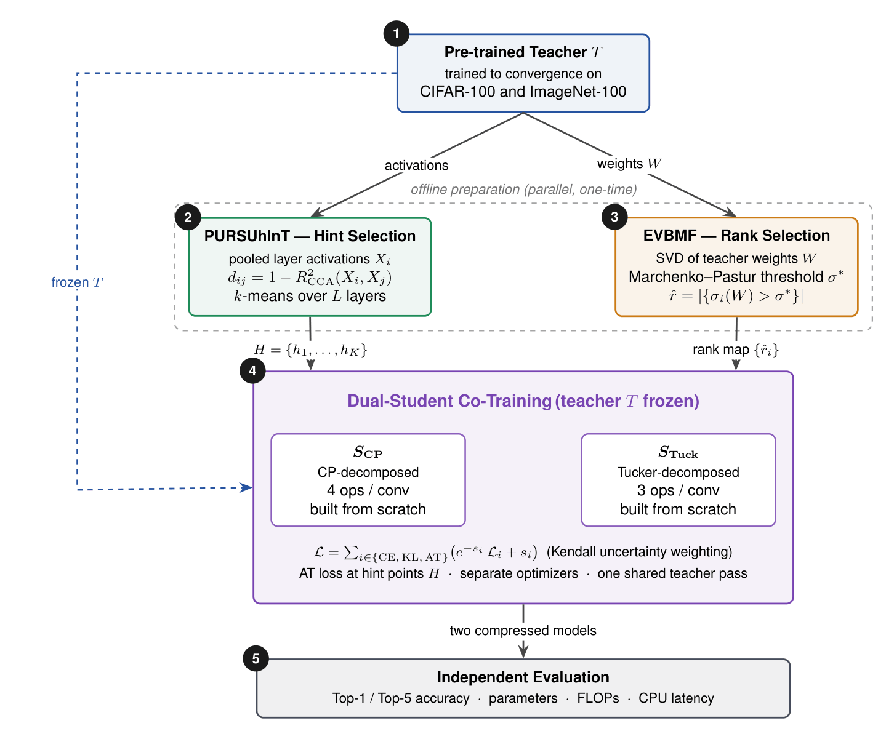
K-means clustering on teacher layer representations using 1 − R²CCA distance selects one non-redundant hint point per cluster (K=3 CIFAR, K=4 ImageNet-100). Avoids redundant supervision from semantically similar layers.
Reads the teacher's trained weight spectrum and thresholds singular values against the Marchenko–Pastur noise distribution — setting each layer's rank automatically. Non-uniform allocation: early layers ≈59%, deep layers 36–44%.
A CP and a Tucker student are co-trained under one shared teacher forward pass, combining cross-entropy, KL-divergence and spatial attention transfer with learned Kendall uncertainty weights — eliminating all manual loss coefficients.
Both students share the same base architecture but factorize every eligible convolution differently, creating a controllable Pareto trade-off between model size and accuracy.
Replaces each 2D convolution with four separable operations: 1×1 → dw-kH → dw-kW → 1×1. Separable spatial filtering discards all cross-channel interaction outside the pointwise stages — yielding the highest compression ratio.
Replaces each 2D convolution with three operations: 1×1 → kH×kW core → 1×1. The dense core preserves cross-channel correlations across all spatial positions — delivering higher accuracy and lower latency despite more parameters than CP.
The three losses (cross-entropy, KL-divergence, spatial attention transfer) operate at wildly different numerical scales. Learnable log-variance weights si equalize their gradient contributions to within 10% automatically. At epoch 99: CE contribution 0.90, KL 1.00, AT 0.91 — despite the raw AT weight being 702× larger.
Every configuration uses the identical pipeline (same EVBMF ranks, same PURSUhInT hint points, same co-training loop) with only the distillation criterion changed. Bold values are the best Top-1 in each column.
| Method | Decomp. | Top-1 % | Top-5 % | Params | FLOPs | Params Compr. | FLOPs Compr. |
|---|---|---|---|---|---|---|---|
| ResNet-34 → ResNet-18 | |||||||
| Teacher (ResNet-34) | 81.72 | 95.38 | 21.34 M | 3.68 G | 1.0× | 1.0× | |
| KD | CP | 77.16 | 93.68 | 1.33 M | 277.99 M | 16.04× | 13.23× |
| FitNet | CP | 78.48 | 94.70 | ||||
| AT | CP | 79.50 | 95.00 | ||||
| VID | CP | 78.52 | 94.54 | ||||
| WSL | CP | 77.44 | 94.42 | ||||
| KD | Tucker | 77.26 | 94.14 | 3.25 M | 655.50 M | 6.56× | 5.60× |
| FitNet | Tucker | 80.22 | 95.34 | ||||
| AT | Tucker | 80.12 | 95.32 | ||||
| VID | Tucker | 79.88 | 95.14 | ||||
| WSL | Tucker | 79.44 | 95.16 | ||||
| ResNet-50 → ResNet-18 | |||||||
| Teacher (ResNet-50) | 82.54 | 95.96 | 23.71 M | 4.13 G | 1.0× | 1.0× | |
| KD | CP | 78.10 | 93.94 | 1.35 M | 270.15 M | 17.59× | 15.29× |
| FitNet | CP | 78.48 | 94.44 | ||||
| AT | CP | 79.60 | 94.84 | ||||
| VID | CP | 78.14 | 94.04 | ||||
| WSL | CP | 78.58 | 94.52 | ||||
| KD | Tucker | 77.66 | 93.94 | 3.18 M | 600.63 M | 7.46× | 6.88× |
| FitNet | Tucker | 80.10 | 95.28 | ||||
| AT | Tucker | 81.04 | 95.56 | ||||
| VID | Tucker | 80.18 | 95.48 | ||||
| WSL | Tucker | 80.24 | 95.34 | ||||
Bold = column best. AT is best-performing objective in both pairs. Tucker's best (81.04%) is only 1.50 pp below the teacher (82.54%) at 7.46× compression.
| Method | Decomp. | Top-1 % | Top-5 % | Params | FLOPs | Params Compr. | FLOPs Compr. |
|---|---|---|---|---|---|---|---|
| WRN-40-2 → WRN-16-2 | |||||||
| Teacher (WRN-40-2) | 76.79 | 93.60 | 2.26 M | 330.43 M | 1.0× | 1.0× | |
| KD | CP | 69.01 | 91.63 | 111.80 K | 17.20 M | 20.27× | 19.21× |
| FitNet | CP | 71.47 | 92.80 | ||||
| AT | CP | 71.85 | 93.00 | ||||
| VID | CP | 71.34 | 92.47 | ||||
| WSL | CP | 70.59 | 92.79 | ||||
| KD | Tucker | 68.79 | 91.17 | 332.76 K | 52.03 M | 6.78× | 6.35× |
| FitNet | Tucker | 71.95 | 92.97 | ||||
| AT | Tucker | 72.23 | 93.16 | ||||
| VID | Tucker | 71.33 | 92.75 | ||||
| WSL | Tucker | 71.82 | 92.87 | ||||
| WRN-40-2 → ResNet-8×4 (cross-architecture) | |||||||
| Teacher (WRN-40-2) | 76.01 | 93.79 | 2.26 M | 330.43 M | 1.0× | 1.0× | |
| KD | CP | 73.27 | 93.45 | 258.77 K | 39.05 M | 8.71× | 8.46× |
| FitNet | CP | 72.65 | 93.11 | ||||
| AT | CP | 73.56 | 93.50 | ||||
| VID | CP | 72.29 | 93.08 | ||||
| WSL | CP | 72.30 | 93.11 | ||||
| KD | Tucker | 71.61 | 93.13 | 726.67 K | 92.24 M | 3.10× | 3.58× |
| FitNet | Tucker | 72.03 | 92.82 | ||||
| AT | Tucker | 72.20 | 93.28 | ||||
| VID | Tucker | 72.25 | 92.98 | ||||
| WSL | Tucker | 71.22 | 92.81 | ||||
| ResNet-32×4 → ResNet-8×4 | |||||||
| Teacher (ResNet-32×4) | 79.61 | 94.94 | 7.43 M | 1.09 G | 1.0× | 1.0× | |
| KD | CP | 71.88 | 92.40 | 252.53 K | 48.77 M | 29.44× | 22.31× |
| FitNet | CP | 72.44 | 92.78 | ||||
| AT | CP | 73.54 | 93.49 | ||||
| VID | CP | 72.79 | 92.92 | ||||
| WSL | CP | 73.08 | 93.37 | ||||
| KD | Tucker | 70.85 | 92.59 | 679.70 K | 130.57 M | 10.94× | 8.33× |
| FitNet | Tucker | 71.70 | 92.98 | ||||
| AT | Tucker | 73.14 | 93.63 | ||||
| VID | Tucker | 71.44 | 92.54 | ||||
| WSL | Tucker | 72.17 | 93.22 | ||||
AT best in 5 of 6 columns (WRN-40-2→ResNet-8×4 Tucker exception: VID wins by 0.05 pp). Cross-architecture transfer works without any modification.
| Method | Decomp. | Top-1 % | Top-5 % | Params | FLOPs | Params Compr. | FLOPs Compr. |
|---|---|---|---|---|---|---|---|
| ResNet-32×4 → WRN-16-2 (cross-architecture, largest compression) | |||||||
| Teacher (ResNet-32×4) | 79.64 | 94.69 | 7.43 M | 1.09 G | 1.0× | 1.0× | |
| KD | CP | 66.02 | 89.78 | 116.09 K | 20.83 M | 64.04× | 52.24× |
| FitNet | CP | 71.36 | 92.50 | ||||
| AT | CP | 72.01 | 93.26 | ||||
| VID | CP | 69.29 | 91.46 | ||||
| WSL | CP | 71.47 | 92.71 | ||||
| KD | Tucker | 68.25 | 91.23 | 340.19 K | 70.65 M | 21.85× | 15.40× |
| FitNet | Tucker | 71.59 | 92.92 | ||||
| AT | Tucker | 73.06 | 93.46 | ||||
| VID | Tucker | 68.52 | 91.58 | ||||
| WSL | Tucker | 72.05 | 93.06 | ||||
| ResNet-110 → ResNet-20 | |||||||
| Teacher (ResNet-110) | 74.30 | 93.21 | 1.74 M | 257.40 M | 1.0× | 1.0× | |
| KD | CP | 63.64 | 89.00 | 47.60 K | 8.35 M | 36.48× | 30.83× |
| FitNet | CP | 66.67 | 90.60 | ||||
| AT | CP | 66.06 | 90.37 | ||||
| VID | CP | 66.74 | 91.12 | ||||
| WSL | CP | 65.23 | 90.25 | ||||
| KD | Tucker | 65.79 | 90.61 | 127.24 K | 23.00 M | 13.65× | 11.19× |
| FitNet | Tucker | 67.43 | 91.35 | ||||
| AT | Tucker | 67.15 | 90.92 | ||||
| VID | Tucker | 67.09 | 91.33 | ||||
| WSL | Tucker | 66.72 | 90.72 | ||||
| VGG-13 → VGG-8 | |||||||
| Teacher (VGG-13) | 75.21 | 92.49 | 9.46 M | 285.99 M | 1.0× | 1.0× | |
| KD | CP | 70.79 | 91.44 | 574.08 K | 14.79 M | 16.48× | 19.34× |
| FitNet | CP | 70.20 | 91.34 | ||||
| AT | CP | 70.26 | 91.49 | ||||
| VID | CP | 70.28 | 91.35 | ||||
| WSL | CP | 69.10 | 90.97 | ||||
| KD | Tucker | 69.85 | 91.29 | 1.63 M | 40.21 M | 5.82× | 7.11× |
| FitNet | Tucker | 68.94 | 90.60 | ||||
| AT | Tucker | 69.22 | 91.03 | ||||
| VID | Tucker | 68.55 | 90.86 | ||||
| WSL | Tucker | 67.98 | 90.36 | ||||
VGG-13→VGG-8 is the only pair where logit-only KD outperforms all feature-based methods — VGG's lack of residual connections makes attention-map transfer less effective. The 64.04× CP compression (ResNet-32×4→WRN-16-2) still achieves 72.01% Top-1.
| Metric | CP | Tucker |
|---|---|---|
| Parameter compression | up to 64× | up to 22× |
| FLOPs compression | up to 52× | up to 15× |
| Top-1 accuracy | Lower | Higher ✓ |
| CPU latency speedup | 1.96× | 2.11× ✓ |
| Ops per conv | 4 | 3 |
ResNet-34→18 CPU latency: 265.98 ms teacher → 135.88 ms CP (1.96×) → 125.91 ms Tucker (2.11×). Tucker carries 2.4× more parameters than CP yet runs faster because its 3-operation kernel chain issues fewer sequential CUDA/CPU kernel launches than CP's 4-operation chain, and its dense core convolution maps more efficiently to hardware.
Key charts covering the accuracy–compression Pareto frontiers across all benchmarks, EVBMF per-layer rank allocation, training convergence trajectories for both students, and automatic loss balancing.
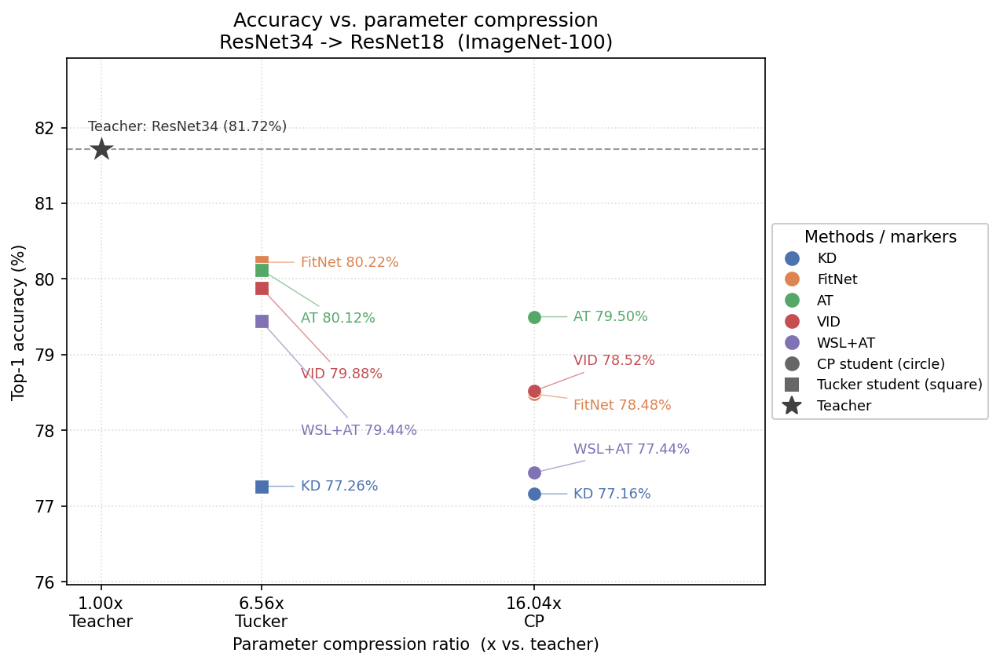
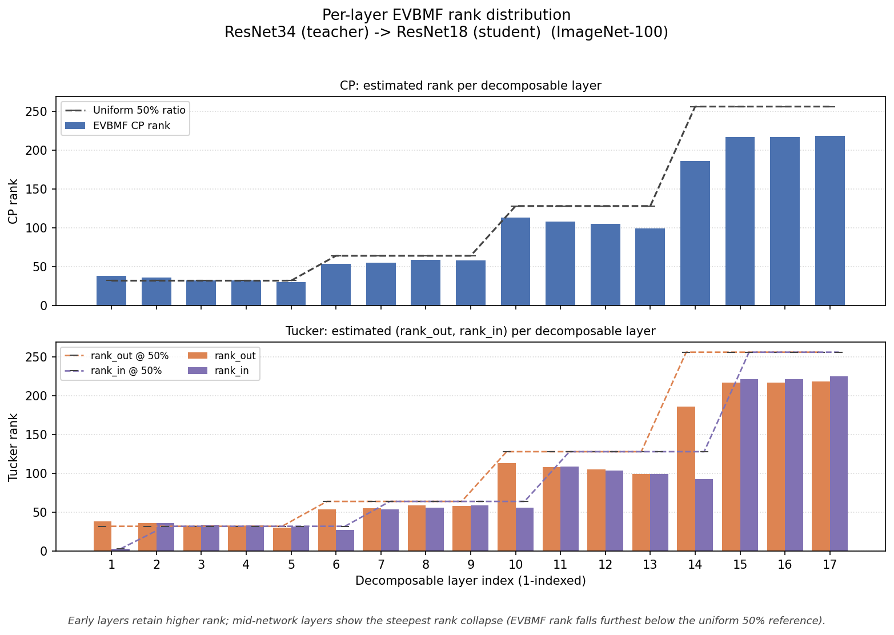
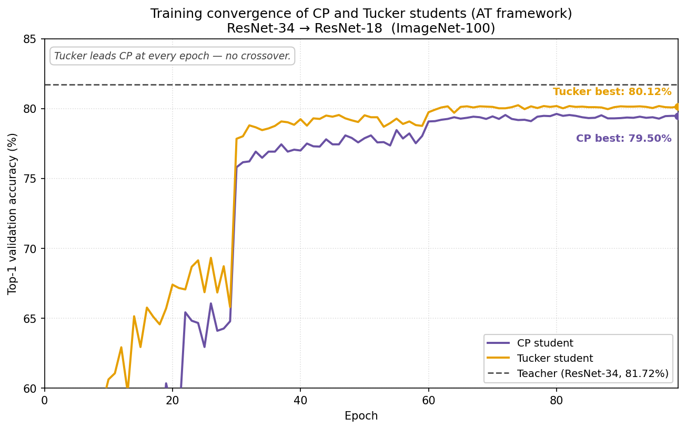
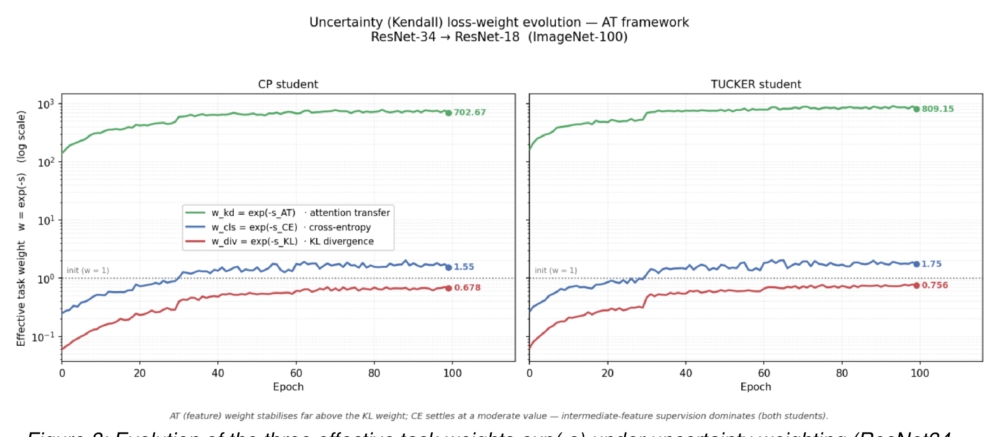
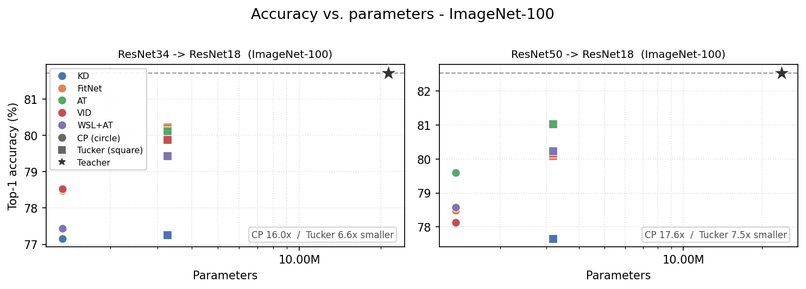
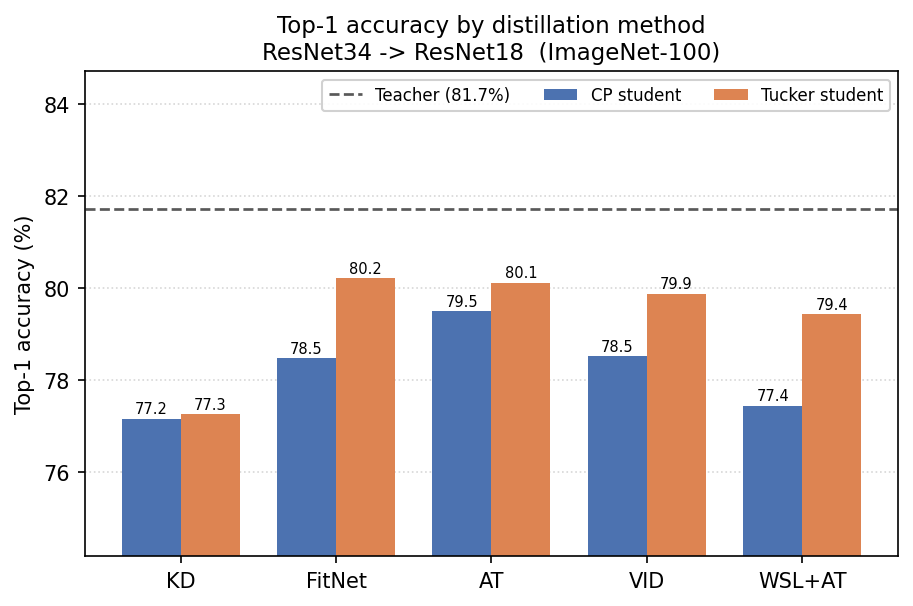
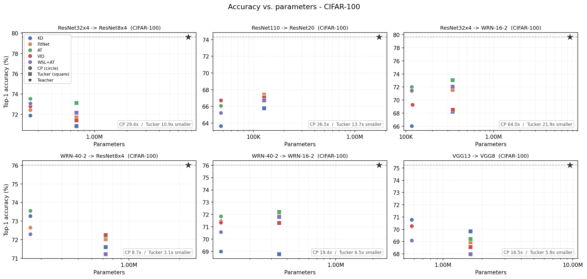
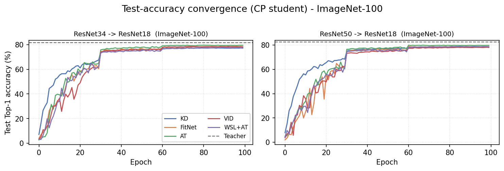
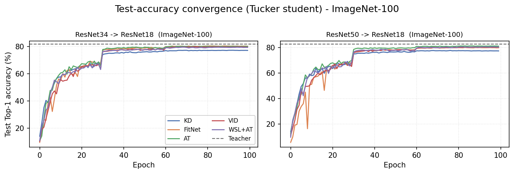
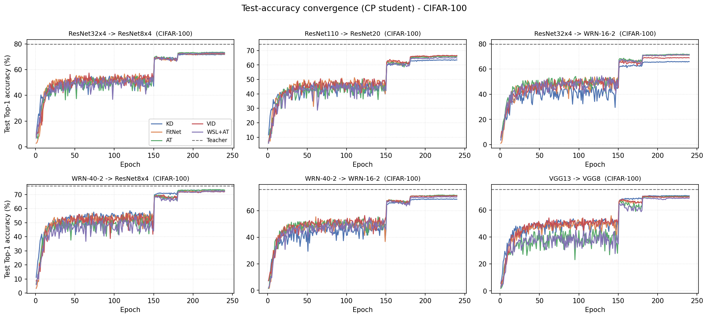
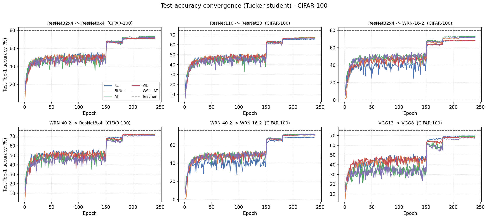
The entire pipeline — from GPU-accelerated data loading to FLOP profiling — is reproducible end to end with a single shell script per dataset.
Istanbul Technical University · Faculty of Computer and Informatics · Department of Artificial Intelligence and Data Engineering · June 2026.
A short video walkthrough of the motivation, method and key results.
The 2-minute presentation will be embedded here once published to YouTube.
Stay tuned